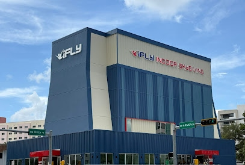

Impact glass for commercial buildings in Florida is not the same product category as residential impact windows, and it doesn't cost the same. Commercial impact systems are engineered to meet stricter wind-load calculations, carry project-specific Florida Product Approvals or Miami-Dade Notices of Acceptance, and install into framing systems (storefront, curtainwall, window wall) that residential work rarely involves. It's in the laminated interlayer technology, the reinforced framing, the engineering documentation, and the tested anchor conditions. Here's what commercial impact glass actually costs in Florida in 2026, and what drives those numbers.

Impact Glass Commercial Pricing - 2026 Ranges
These are installed per-SF and per-unit ranges for commercial impact systems in Florida, based on current bidding activity. Projects in HVHZ counties (Miami-Dade, Broward) price at the high end. Projects in non-HVHZ coastal counties using Florida Product Approvals price at the low-to-mid range.
| System | Installed Cost | Impact Rating |
|---|---|---|
| ES-9000 impact entrance doors (medium-stile pair) | By scope | LMI / HVHZ |
| ES-8000 impact storefront (pre-glazed) | By scope | LMI / HVHZ |
| ESWindows impact windows (punched openings, standard) | By scope | LMI (9-lb 2x4) |
| ESWindows impact windows (oversized / architectural) | By scope | LMI / HVHZ |
| Euro-Wall impact folding systems | By scope | LMI, tested to TAS 201/202/203 |
| Impact sliding glass doors (multi-panel) | By scope | LMI / HVHZ |
| GW-7000 impact curtainwall | By scope | LMI, structural silicone |
| Laminated impact IGU (glass only, 9/16") | By scope | LMI |
LMI vs SMI vs HVHZ - The Ratings That Drive Price
Three impact classifications matter for commercial glazing pricing in Florida, and they are not interchangeable.
Large Missile Impact (LMI)
LMI testing follows ASTM E1886/E1996 and TAS 201/202/203 - a 9-pound 2x4 lumber projectile fired at 34 mph (50 feet per second) strikes the glass in three separate locations, followed by 9,000 cycles of positive and negative pressure testing to simulate hurricane wind loads. LMI is the rating required for anything installed below 30 feet above grade within the wind-borne debris region of Florida, which covers most coastal counties.
Small Missile Impact (SMI)
SMI uses a smaller projectile (10 ball bearings at 50 fps) and is allowed for glazing installed above 30 feet above grade outside of HVHZ.
HVHZ (Miami-Dade / Broward)
HVHZ designation requires LMI-rated products with an active Miami-Dade Notice of Acceptance (NOA) - not just a Florida Product Approval (FL) number. NOA documentation is more demanding: it requires third-party testing at an accredited lab, product-specific anchor engineering, and defined installation procedures.
Why Impact Costs More Than Non-Impact
Commercial impact glass carries a cost premium that comes from four places, and understanding where helps you scope projects intelligently.
1. Laminated Glass vs Monolithic
Impact glass is laminated - two lites of tempered or heat-strengthened glass bonded with a polyvinyl butyral (PVB) or SentryGlas (SGP) interlayer. The interlayer is what holds the glass together when it fractures, stopping penetration of the missile. A laminated IGU for impact use costs more than an equivalent non-impact IGU, and SGP interlayers (stiffer, stronger, higher UV resistance) cost more than PVB.
2. Reinforced Framing
Impact-rated storefront and window wall framing uses thicker aluminum wall sections, larger fasteners, deeper anchor engagement, and reinforced glazing pockets. The ES-8000 impact storefront frame weighs significantly more than a comparable non-impact frame, and its anchor schedule is three times tighter. That means more material, more labor to install, and more engineering.
3. Engineering and Product Approval
Every impact-rated system in Florida carries an FL or NOA number that references lab-tested assemblies. When a product is installed outside of its tested conditions - different anchor substrate, larger opening size, different glass buildup - it requires site-specific engineering to document a permissible variation. That engineering is rarely free.
4. Labor
Impact glazing panels are heavier. A single 5'0" x 10'0" laminated impact IGU can weigh 250-350 pounds. That changes the crew size, the lift equipment, and the install time, all of which add to field labor cost relative to non-impact work.
Why Low-Cost "Impact" Products Often Fail NOA
There are products on the Florida market advertised as "impact-rated" that carry expired NOAs, NOAs for different glass buildups than what's being installed, or NOAs tied to a specific manufacturer's framing that doesn't match the storefront the product is being set into. When a building department plan reviewer catches that mismatch during permit review, the project stalls. When they catch it at inspection, the glazing comes out and gets replaced.
The lowest-priced "impact" proposals you'll see on a commercial bid sheet are often the ones that don't include valid, current, matched NOA documentation. When you ask the sub to produce the NOAs for the specific products in the specific framing they're proposing, and they can't, you've identified a future change order. ACG's bids include NOA package references as a standard deliverable, not an upgrade. Review our manufacturer partnerships for the manufacturer systems we install.
Working with a glazing sub who specifies products with current NOA documentation from day one protects the schedule and avoids change orders at permit and inspection.
Getting an Accurate Impact Glazing Bid
Impact glazing pricing is scope-specific. A 500 SF impact storefront on a restaurant conversion in Tampa is priced differently than a 20,000 SF impact curtainwall on a new office tower in West Palm Beach. Send plans and we'll return line-item pricing, NOA references, and alternates within 48 hours. Submit through contact.html or our Scope Engine intake.
Ready to get started?
ACG installs impact-rated commercial glazing across Florida - HVHZ and coastal - with full NOA documentation as standard. We're a factory-installer for ESWindows, Euro-Wall, and the other major Florida impact product lines. Send plans and we'll turn around detailed impact pricing fast.